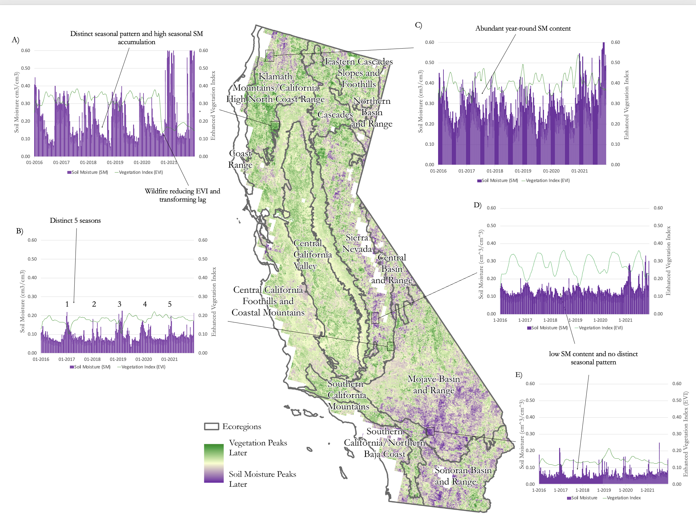

🌍 GIS & Data Analysis Portfolio
Welcome! I'm Slade Laszewski, a geographer, environmental scientist, and data analyst with experience in GIS, remote sensing, and environmental modeling. This page showcases a collection of my work, including interactive maps, code repositories, and spatial data visualizations.
Featured Projects
💧 Hydrosocial Territories: Modeling and Mapping Ecohydrological Metrics
Understanding water systems requires more than just modeling hydrological and ecological health, it requires insight into how water is embedded in political, and territorial dynamics. My work on hydrosocial territories explores water governance, land cover/use, and an ecosystem service (the uptake of moisture in soil by vegetation).
Hydrosocial territories are spaces where water and society are co-produced—shaped by management, and ecological processes. Using GIS, remote sensing, and modeling the lagged oscillations of soil moisture and vegetation greenness against land use/cover and other geographic boundaries, I investigate how this ecosystem service relates to community sensitivity (wildfires and other destabilizing events) over time.
Key Areas of Focus:
- Quantifying the ecosystem service of soil moisture to vegetation greenness
- Analyzing land use by the ecosystem service
- Integrating socio-political boundaries with ecohydrological models
🔗 Project Repository for modeling ecohydrology
A general overview of the lagged relationship between soil moisture and vegetation greenness across ecoregions:

⚡ Energy Security & Wildfires in California's WUI (First AGU Conference!)
This research, presented at the 2023 American Geophysical Union (AGU) conference, investigates how rising population growth in California’s Wildland-Urban Interface (WUI) increases exposure to both wildfires and energy insecurity, an extension of a previous peer-reviewed publication I first-authored. The study examines trends in Public Safety Power Shutoff (PSPS) events, wildfire-induced outages, and demographic change from 2010–2021.
Key Themes:
- Rising population in high-risk WUI zones from 2010 to 2021
- Geographic trends in wildfire- and PSPS-related power outages
- Relationship between outage frequency, WUI extent, and vulnerability
The analysis uses U.S. Census tract data, utility outage reports, and spatial overlays to explore compounded environmental and infrastructure risks.
📄
Poster PDF:
🌲 Wildland-Urban Interface & Population Change
As population growth accelerates along the Wildland-Urban Interface (WUI), the convergence of infrastructure and fuel for wildfires, vegetation, becomes a site of critical environmental concern. This project explores spatial patterns of population increase in fire-prone regions, highlighting how economics, suburban expansion, and ecological vulnerability intersect.
Using demographic data, land cover classifications, and spatial overlays, I assess WUI growth and its implications for wildfire risk, resource management, and land-use policy.
🔗 Project Repository for analyzing population and economic metrics
Interactive Exhibit:
📄
Environmental Research Communications, IOP Publishing (2024)
🔗
Read the article here if its not visible
🐀 Rat Sightings and Food Scrap Drop-Off Sites in Brooklyn
In 2022, M&M Pest Control estimated that Brooklyn’s rat population reached 1,148,150—a 56% increase since 2010. Our analysis of Rat Sightings in Brooklyn from 2021 to October 2025 uses spatial transformations to better understand infestation patterns. Given that rats typically scavenge within city blocks, food scrap drop-off locations were aggregated at the census tract level to reflect more realistic movement patterns.
The northeastern corner of Brooklyn showed a high concentration of both rat sightings and food scrap drop-off sites. To mitigate data skew due to duplicated reports, only “initial” and “second follow-up” inspection types were included. A key insight emerged when analyzing the operational hosts of compost sites: while the NYC Department of Sanitation operates 63% of food drop-off sites, they accounted for a striking 88% of rat sightings near these locations. This suggests a reporting bias based on agency infrastructure, which raises questions about the reliability of citizen-reported or nonprofit-collected rat data.
Despite limitations in data collection, NYC has used this rat sighting information to pass legislation targeting infestations. Yet, the visible relationship between rat sightings and composting activity—especially around sanitation-operated sites—is too significant to ignore.
Explore the Dashboard:
🪦 Oxford Cemetery Headstone Mapping Project
This collaborative mapping effort, in Advanced GIS (GEO 442/542), documents and analyzes the condition of headstones in the Oxford Cemetery using high-resolution drone imagery, ArcGIS Online, and the Field Maps App.
I digitized over 100 headstones and went through quality assurance of past students submissions.
I individually digitized old sketchs of the cemetery to overlay them with drone aerial imagery and identified correct locations using the imagery along with student headstone ids.
My first story map from 2021!: Wildfire Prevention in California
This project explores effective strategies to combat wildfires, protect vulnerable communities, and improve the distribution of firefighting resources across California. Drawing from GIS datasets, field research, and socio-economic analysis, the project emphasizes the disproportionate impact of wildfires on working-class communities and the need for targeted mitigation strategies, such as equitable policy development, and improved facility accessibility.
Key objectives include analyzing the spatial relationships between wildfire incidents, prescribed burns, population density, and fire suppression infrastructure to inform policy and planning. The work combines ecological science with social considerations, advocating for long-term solutions that balance environmental health and community resilience.
Explore the interactive StoryMap below to learn more about wildfire trends, risk zones, and mitigation strategies in California.
Contact
📧 laszews@miamioh.edu
🔗 LinkedIn